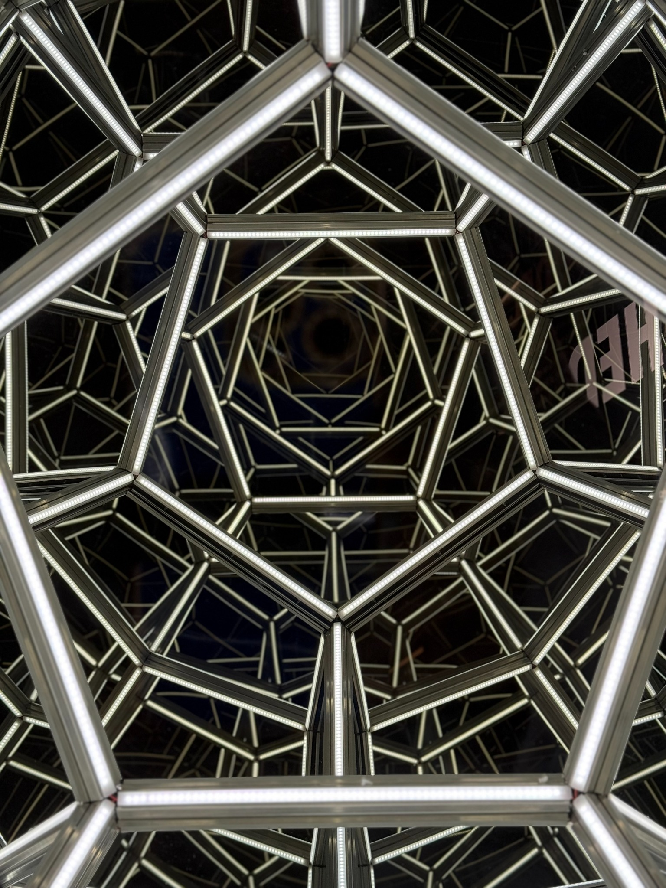

Thinking Aloud / Proposed Installation
The Human
Intersection
A participatory installation exploring what becomes visible when we encounter another person’s lived experience before we encounter the labels used to explain them.
The premise
Identity matters.
It is not the whole story.
We have become remarkably skilled at categorizing one another by what separates us. Race. Nationality. Religion. Politics. Gender. Class. Those distinctions shape experience, power, access, and consequence—but they can also become shortcuts that prevent us from recognizing the places where our lives already intersect.
The Human Intersection asks visitors to encounter human responses first and demographic context later. The delay is deliberate. It gives recognition a chance to arrive before categorization does.
The work does not ask people to ignore difference. It asks what difference has been allowed to explain before we have examined the human experience underneath it.
The sequence
The artistic intervention is the order.
The audience’s own interpretive process becomes material for the work. A visitor reads an anonymous statement, notices what they assume about its author, recognizes—or rejects—the experience, and only afterward receives selected demographic context.
Encounter
Read or hear a statement without demographic context.
Assume
Notice the identity or background you silently assigned to the speaker.
Recognize
Connect—or do not connect—with the experience before knowing who offered it.
Reveal
Receive selected, anonymized demographic intersections.
Disrupt
Confront the mismatch, confirmation, or uncertainty between assumption and reality.
Reflect
Consider what the overlap changes—and what it does not.
Contribute
Answer a question and become part of a future iteration of the work.
“Community participation does not support the work; it constitutes the work itself.”The Human Intersection / Thinking Aloud

Conceptual visual reference. The installation is currently in development.
How it may take form
Text. Response. Reveal.
The installation is being developed as a flexible public work that can adapt to galleries, museums, airports, train stations, civic spaces, and other places where strangers naturally cross paths.
Participation
The response belongs to the participant.
Participation is anonymous, voluntary, and designed to avoid extracting trauma for spectacle. People may skip questions, choose how much demographic information to share, and encounter the work without contributing at all.
The installation is intended to remain transparent about how responses are selected, grouped, shortened, displayed, and archived. No single contribution is presented as representative of an entire demographic group.
Current stage
Developing the first public prototype.
The Human Intersection is currently a developing Thinking Aloud installation. The next phase is a small, credible prototype: a limited set of prompts, anonymous responses, visualized intersections, and a demographic reveal sequence that can be experienced and documented before scaling into larger public environments.
My work does not ask audiences to adopt my conclusions or my worldview. It reintroduces them to the solitary act of trusting their own observations enough to examine them honestly.
Agreement is optional. Introspection is requisite.
My work begins in public, but it is completed in private. The installation ends when the introspection begins.